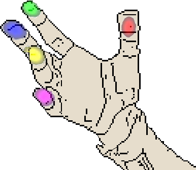

Dataset · BMVC 2015
HandNet
A depth-image dataset for hand and fingertip detection, collected with synchronized depth cameras and electromagnetic tracking.
Dataset Overview
HandNet accompanies Rule of Thumb: Deep Derotation for Improved Fingertip Detection. It contains depth images, annotated heatmaps, and discrete fingertip and palm labels, captured using a RealSense F200 synchronized with TrakSTAR trackers.
The dataset was recorded with 10 participants, with approximately 45 minutes of recording per participant.

- Depth camera
- Intel RealSense F200
- Tracking
- TrakSTAR electromagnetic trackers
- Annotations
- Fingertips and palm
Interactive Dataset Examples
Inspect 20 precomputed examples from the released archives, including eight matched original/transformed pairs. The viewer presents calibrated depth surfaces, infrared and label images, source heatmaps, and the measured positions and orientations of five fingertip sensors and one palm sensor.
All example assets and rendering code are stored with this website. Viewing them requires no dataset download, account, backend, or connection to Hugging Face. Open the standalone viewer.
The point clouds are downsampled, calibrated reconstructions; the displayed depth images are contrast-rendered previews. Six tracked sensor locations are not a full anatomical joint skeleton. Ground-truth normalization is a geometric demonstration, not a prediction from the paper’s trained model.
Downloads
The complete HandNet release on Hugging Face contains all seven original distribution archives (23.73 GiB), including 202,198 training, 10,000 test, and 2,773 validation frames, plus ground-truth-derotated and rotation-perturbed variants. The data is openly available under CC BY 4.0.
The 96-row Parquet preview (3.3 MB) contains display-ready images and sensor annotations. Native depth and annotation arrays remain in the original archives. The research explorer on Hugging Face provides the larger interactive preview.
Citation
Usage & Attribution
HandNet data, including the precomputed examples on this page, is available under Creative Commons Attribution 4.0 International (CC BY 4.0), including academic and commercial use. You may share and adapt the data provided you credit Aaron Wetzler, Ron Slossberg, and Ron Kimmel, link the license, and indicate changes. Please cite the BMVC 2015 paper when using HandNet.
These terms match the open dataset release on Hugging Face. The new browser viewer is MIT licensed; the original MATLAB repository retains its historical code terms.